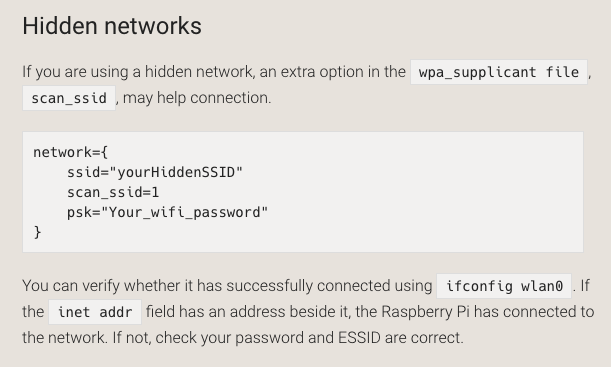

I will be using this website to docmuent the things I learn and progress I make in this class!
Today I was tring to get the Pi−top to connect to the interent and not
use to GUI to do so. I instead used command line to connect to my home wifi.
The commend I used was sude raspi-config. I then selected Network
Options, Wi−fi. If you like to look for avalibe newtworks you can use
sudo iwlist wlan0 scan. There you can see the SSID of all avalible
networks and if they need a password. If you need more helping trying to
connect to the internet using your raspberry pi then I would advise you use
this link. It explains what you can do to join any network including hidden
networks.
